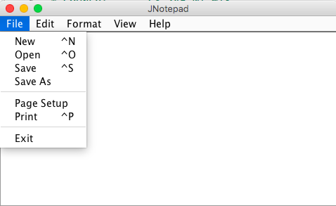

JNotepad
The JNotepad is a small program, which has similar features to window notepad, allows user to create new file, import file, and save file. Also, user can edit text by changing sizes from small to large or from large to small, fonts, and colors.
